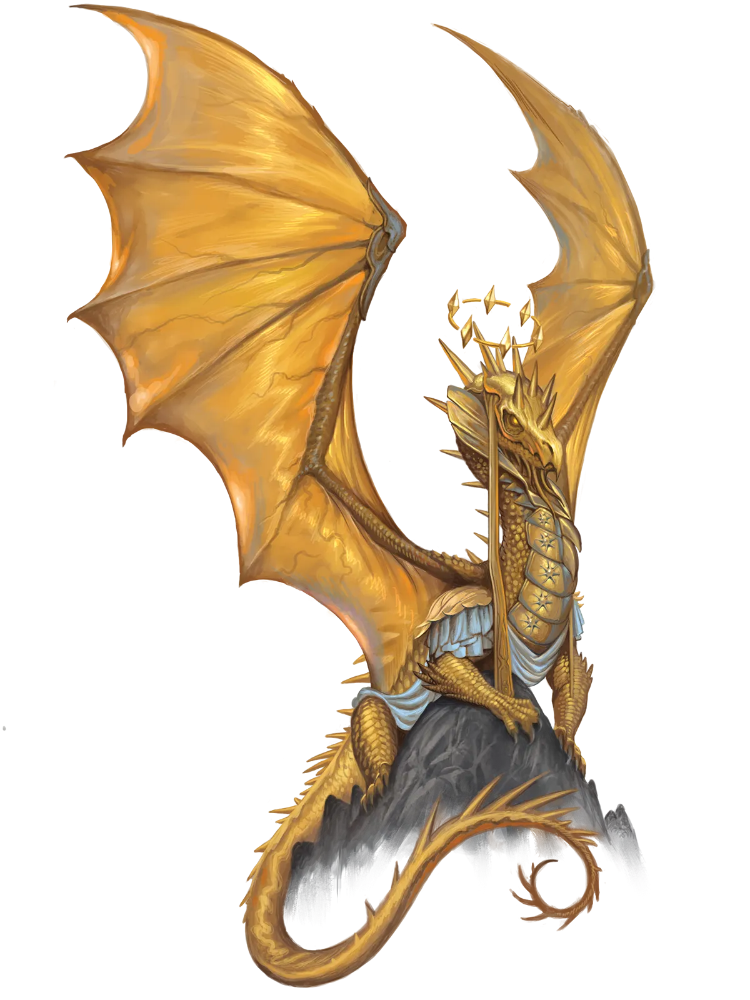
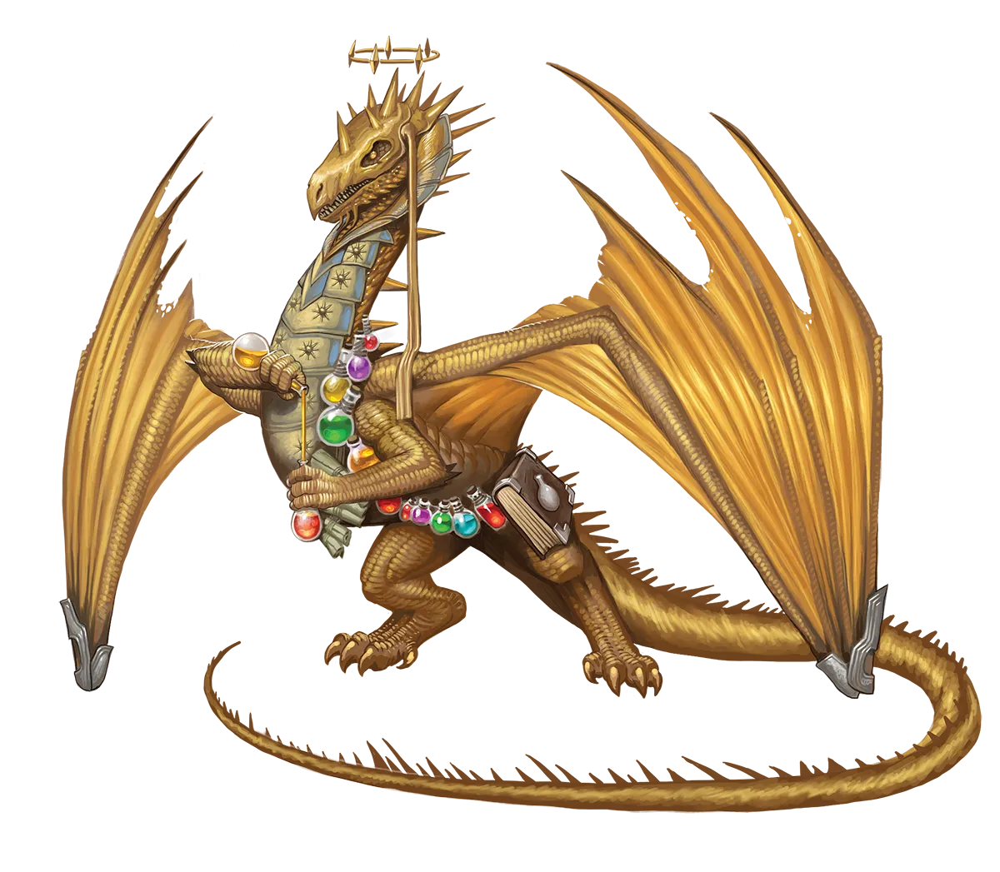

闪耀之物
在最常见的龙类中，即多彩龙和金属龙中，黄金龙是最强大的。但这并不意味着它们比我们其他人优越。如果要说有什么不同的话，这反而使它们成为最令人恼火的傲慢形式――它们假装谦虚，但其真正的傲慢却通过其疏离的行为暴露无遗。
金龙 Gold Dragon |
|
|
黄金龙沉静、耐心且智慧，常隐居于世，沉思每一个举动的深层意涵，秉持更广阔的视野。因此，当一条黄金龙进行永恒之光仪式，迫使自己投身于快节奏、高压力的行动时，它们那些遵循传统的同胞们很难理解其背后的理由与视角。毕竟，直接介入短命种族那瞬息万变的世界，与为长远目标和广阔视野而提供的缓慢、审慎的建议，是截然相反的。传统派黄金龙不禁觉得，它们的永恒派同道目光短浅，过于沉溺于促使他们举行仪式的情境细节，从而无法理解自身行为的深层意涵。尽管如此，传统派黄金龙在与考虑进行该仪式的黄金龙交谈时，仍会保持礼貌与慈悲。它们会给予温和的建议与智慧，以巧妙引导对方放弃仪式，同时仍尊重其自主选择。对于已经完成的永恒派黄金龙，传统派觉得争论已无意义，因为仪式既已结束，过程便不可逆转。比起争论“谁是对的”，更重要的是引导和支持其他龙。而永恒派黄金龙这边，它们能感觉到那种未言明的反对，因此更倾向于主动展开对话，以说服其他黄金龙相信它们的行为是恰当且经过深思熟虑的。但这一举动往往导致传统派龙礼貌地避而不谈，而非陷入争执，这对试图证明自己的永恒派黄金龙而言，反而更加令人挫败。 永恒派黄金龙往往摒弃其传统派同胞的隐居生活方式，转而加入冒险者队伍，以施展其魔法那爆发性的成长潜力。它们倾向于选择具有巨大未来潜力，但可能需要指引和明智建议才能走在正途上的冒险团队。毕竟，引导有才华但误入歧途的人成为一代英雄，不仅能带来巨大的善果，也能防范这些才华横溢的冒险者被引入歧途的危险，从而阻止一个强大恶棍的崛起。这并非说它们与正义的冒险团队合不来；每个人偶尔都需要一个可以依靠的人来提供建议。永恒派黄金龙倾向于选择那些能让他们在不过分抢占风头的情况下，更好地为他人提供引导和支持角色的职业。牧师和武僧尤为常见，这使它们能够在身体上和心理上保护或治疗同伴。黄金龙总体习惯于缓慢行事、反应、保护和治疗。而永恒派黄金龙，则能以其迅速而果断的行动让敌友双方都感到惊讶。 闪耀之物 在最常见的龙类中，即多彩龙和金属龙中，黄金龙是最强大的。但这并不意味着它们比我们其他人优越。如果要说有什么不同的话，这反而使它们成为最令人恼火的傲慢形式――它们假装谦虚，但其真正的傲慢却通过其疏离的行为暴露无遗。 金龙特质 Gold Dragon Traits 你出身于一脉睿智而威严的顾问与领袖――金龙世系。 |
  |